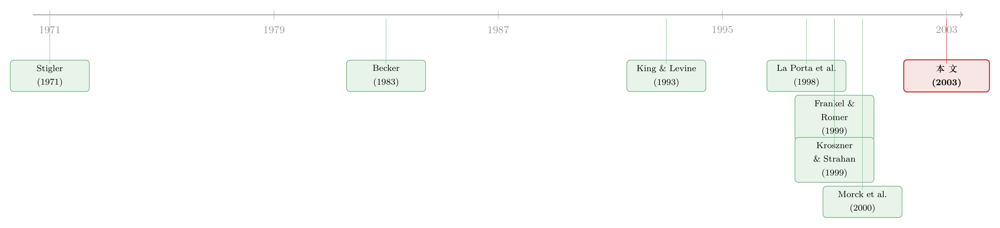

金融发展会「倒退」吗？——一段被遗忘的二十世纪金融史
本文读的是 Rajan & Zingales (2003, Journal of Financial Economics)：用大半个世纪、二十多个国家的数据，作者发现金融发展并不是单调向前的——按多数指标，这些国家在 1913 年比在 1980 年更「金融发达」，直到最近才重新超过百年前的水平。要解释这种「大倒退」，他们提出了一个利益集团理论：在位者（incumbents）天然反对金融发展，因为它会招来竞争；而只有当一国同时向商品贸易和跨境资本敞开大门时，这种反对才会被压住。
1 一个让人不舒服的事实
先讲一个很多人想当然、却经不起查的直觉。
我们大概都默认：金融体系是「越来越发达」的。技术在进步，制度在完善，市场在变深变厚——所以一个国家的股票市值占 GDP 的比重、上市公司的数量、企业靠发股票融资的比例，这些指标即便有波动，长期总该是往上走的。换句话说，金融发展是一条单调上升的曲线。
但 Rajan 和 Zingales 把二十世纪的账翻出来一对，发现这条曲线根本不是单调的——它先涨、后跌、再涨，画出一个深深的「U」字。
最刺眼的一组数字是法国和美国的对比。1913 年，法国的股票市值与 GDP 之比 (stock market capitalization to GDP) 是 0.78，美国是 0.39——法国差不多是美国的两倍。可到了 1980 年，两国的位置彻底反了过来：法国跌到 0.09，美国是 0.46，法国只剩美国的四分之一。再到 1999 年，两者又开始收敛（1.17 vs. 1.52）。
注意，这里说的「法国比美国更发达」，发生在法国民法典从来对投资者不友好（La Porta et al., 1998）的背景下。如果你信奉「普通法 (Common Law) 国家天生股市更发达」的说法，1913 年的数据会让你很尴尬。
这就是论文标题里那个 The Great Reversals（大倒退）：几乎所有国家的金融发展指标在 1929 年之后一路下滑，到 1980 年前后跌到谷底，然后才重新复苏。
2 为什么这件事「不该」发生
一个事实之所以重要，往往不是因为它本身有多惊人，而是因为它和我们脑子里的主流理论打架。
那么，金融发展的主流解释是什么？
首先是需求论。很多经济学家会说：金融不发达，是因为没需求。可作者反问：需求（用工业化水平或人均 GDP 来代理）解释不了为什么经济水平相近的国家，金融发展差这么多。1913 年美国的人均 GDP 并不比法国低，工业化程度还是当时世界最高之一，对信贷的渴求是当时美国政治辩论的常客——你很难说美国「没有融资需求」，可它的股市偏偏比法国小。
数字更直白：经济发展水平只能解释各国 deposits/GDP 比率横截面差异的 14%，而在解释股票市值水平时连统计显著都谈不上。1913 年阿根廷的人均 GDP 跟德国、法国差不多，存款却只有它们的三分之二；阿根廷人均 GDP 是日本的三倍，股市相对规模却只有日本的三分之一。需求显然不是全部答案。
接着是这二十年最有影响力的结构论 (structural theories)——尤其是 La Porta、Lopez-de-Silanes、Shleifer、Vishny（合称 LLSV）开创的「法律与金融」纲领。他们的核心发现是：普通法起源的国家有更好的中小投资者保护，因而股权市场更发达（La Porta et al., 1997, 1998）。这是一套制度禀赋的解释：你继承了什么样的法律、文化、政治系统，决定了你的金融能走多远。（关于「法律 vs. 风土」这条线后来怎么走，可参见《法律是行李，风土是地基》。）
但真正关键的一步在于：结构论有一个它自己绕不开的推论。
如果金融发展取决于法律起源、文化传统这些几乎不随时间变化的结构性因素，那么它就应该满足两件事：第一，一旦跨过结构性门槛，供给会上来满足需求，我们不该看到金融指标脱离需求而潮起潮落；第二，各国的相对位次不该在短期内剧烈洗牌。一个「天生亲金融」的国家，这种禀赋应该一直强下去。
可数据给出的，恰恰是相反的两件事：指标在大幅起落，位次在剧烈反转。而且作者还补了一刀——LLSV 那个「普通法更发达」的规律，在 1913 年的数据里根本不成立：那一年比利时、法国、德国、瑞典的股市相对规模都领先美国。普通法与民法的分野，看起来更像是一个二战之后才出现的现象。Tilly（1992）甚至记载，二十世纪初德国企业发行的股票比英国还多——这跟今天「德国公司比英美更不透明」的常识完全拧着。
于是反转出现了：结构论不是错的，而是不完整的。要同时解释金融发展的时间序列起落与横截面差异，我们需要一个会随时间变化的因子。
3 谁会反对一件好事？
作者认为，那个「会变的因子」，是政治力量的强弱——更准确地说，是支持还是反对金融发展的利益集团的此消彼长。
这里的核心张力，被作者提成了一个极妙的问题：金融发展明明是件对经济整体有利的好事（这一点已有大量证据，如 King & Levine, 1993；Rajan & Zingales, 1998a），谁会反对它？
答案是在位者——已经在金融业里、在产业里占据位置的人。为什么？因为「保持一臂之距的」(arm's length) 市场化金融不认「资历」。它只看项目和创意的好坏，不看你是谁、有没有关系、有没有家底。这正是熊彼特意义上的「创造性破坏」：资本不断流入新企业、流出老企业。可对在位者而言，这恰恰是威胁——发达的金融市场会孵化出竞争对手。所以无论是怕被新公司抢生意的产业巨头，还是怕被新玩家分蛋糕的金融机构，都有动机去压制金融发展。
这就把「金融为什么不发达」从一个技术/禀赋问题，重新定义成了一个分配/政治问题。
那么，什么时候在位者压不住？
作者给出的判断是：当一国同时对贸易和资本开放时，在位者反对金融发展的动机和能力会被同时削弱。
直觉分两层。先看商品贸易开放：一旦国门向进口敞开，本土在位企业要面对外国对手的竞争，它们的「在位租金」本就被削薄；与此同时，出口部门壮大，这些靠开放吃饭的群体会形成支持金融发展的政治力量。再看资本开放：如果资本能自由跨境流动，本土金融在位者就算想关起门来维持高价、低效率的封闭俱乐部，资金也会「用脚投票」流出去找更好的市场——它们的垄断地位被外部选项瓦解了。
但真正点睛的是「同时」二字：作者强调，要把在位者的反对压到最低，光开放贸易不够，光开放资本也不够，必须两者兼备。只开放贸易，在位金融机构仍可在封闭的资本市场里收租；只开放资本而产品市场封闭，产业在位者照样能维持垄断利润去游说反对。两扇门一起打开，竞争的压力才会从产品市场和资本市场两头夹击在位者。
这套逻辑顺带解释了那个深深的「U」字底部：从 1930 年代到 1970 年代，跨境资本流动因为大萧条、布雷顿森林体系下的资本管制等原因萎缩成了涓涓细流（这条全球资本流动的历史，Eichengreen, 1996 有完整记述）。资本一旦不流动，在位者就没了外部约束，可以肆无忌惮地反对金融发展。于是金融指标在这几十年里集体跳水——而且，大萧条和二战造成的需求冲击不足以解释这个倒退：受创最重的经济体一两个十年就恢复了，可金融市场却拖到 1980 年代末才缓过来；更何况，一战之后并没有出现这样漫长的金融萧条。
4 识别策略：怎么证明是「开放→金融」而不是相反
到这里，一个聪明的读者一定会立刻警觉：开放和金融发展正相关，凭什么说是开放导致了金融发展，而不是「支持开放的在位者本来就支持金融发展」这种共同的第三因素在作怪？而且，开放本身也是政治选择——在位者难道不会连开放一起反对吗？
作者用两步来处理这个内生性 (endogeneity) 难题，这也是全文识别上最讲究的地方。
第一步，论证开放在很大程度上是外生的。 有些国家没得选：因为小、因为离邻国近，它们天然就贸易多。更重要的是，各国的开放决策是战略互补 (strategic complements) 的——如果世界上重要的经济体都开放了，跨境的「灰色贸易、走私、低开高开发票」等天然渗漏就会很猛，一个国家想关门也关不住；而且开放阵营（比如出口商）的预期利润和实力会相对上升，更容易在政治上推动开放（这正是 Becker, 1983 的压力集团逻辑）。换言之，别国的开放程度，对某一国的国内政治来说基本是外生的。
第二步，用工具变量把外生那部分「挑」出来。 在检验贸易开放与金融发展的关系时，作者用 Frankel & Romer (1999) 那个基于地理（一国与贸易伙伴的距离）构造的「自然开放度 (natural openness)」作为贸易开放的工具变量，从而只盯住贸易里外生的那一块。距离对资本流动的约束没那么大，所以资本这边没有同样的工具；但正因为资本更易流动，跨境资本的战略互补性更强，于是作者直接用全球范围、随时间变化的跨境资本流动水平，作为「各国是否对资本开放」的一个外生度量——二十世纪初和世纪末，国际资本流动性对大多数国家都很高，中间几十年则很低。
有了这两块拼图，检验就清楚了：
- 在世纪初和世纪末两个资本高流动的时期，横截面上，一国金融发展与其贸易开放度的外生成分（在控制了融资需求之后）正相关——而且确实如此。
- 但在中间时期（1930s–1970s），当跨境资本流动萎缩时，贸易开放与金融发展的正相关关系减弱了（甚至消失）。
这个对比是论文的论证支点：只有当产品市场和资本市场同时开放，贸易开放才对金融发展有强的正效应。 它既支持了「两扇门一起开」的理论预测，也为「为什么 1930–1970 年代金融发展全面倒退」提供了一个统一的机制——资本不流动，在位者的反对就失去了约束。
5 数据
值得花一句话说清这篇论文的「料」从哪来，因为它的雄心很大程度上系于数据本身。
样本是那些能找到二战前金融市场数据的发达国家，大约二十余国，时间跨度从 1913 到 1999，取若干基准年份（1913、1929、1938、1950、1960、1970、1980、1990、1999）。观测单位是国家×年份。金融发展用四个指标共同刻画，每一个都有缺陷，所以要合在一起看：
- 银行业：
deposits/GDP（商业银行+储蓄银行存款 / GDP），优点是时间跨度长、覆盖国家多，缺点是只反映负债端、看不出银行是否结成卡特尔；近期改用私人部门国内信贷 / GDP。 - 股权发行：
equity issues/GFCF（本国公司股票发行额 / 当年固定资本形成总额）。作者坦白，这个指标会系统性低估农业占比高的国家、以及世纪早期（那时企业投资在总投资里占比小）的金融发展水平。 - 股票市值：
stock market capitalization/GDP，比发行额更稳定、更适合跨期比较，但它衡量的是「上市了多少」而非「募了多少」。 - 上市公司数：每百万人口的本国上市公司数，不受估值波动和 GDP 测算误差污染，但太「慢」，且会被产业集中度干扰。
银行存款指标的来源主要是 Mitchell (1995) 的《国际历史统计》。一个诚实的细节：在度量股权时，作者尽量只算本国公司，把伦敦、巴黎、纽约吸引的外国上市剔除掉——因为他们关心的是「本国金融制度能否帮本国产业融资」，这也顺带降低了机械性相关的风险。
6 文献脉络
把这篇论文放回它的谱系里看，会更明白它在「拨」哪根弦。
最上游是监管俘获与利益集团这一支：Stigler (1971) 把监管解释成被产业俘获的产物，Becker (1983) 把它形式化成压力集团之间竞争政治影响力的均衡，Olson (1965, 1982) 则讲集体行动与既得利益如何拖累一国的活力。Rajan-Zingales 把这套「私利塑造制度」的政治经济学，搬到了金融发展这个对象上。
中游是金融与增长和法律与金融两条并行的实证大潮：King & Levine (1993)、Rajan & Zingales (1998a) 确立了「金融发展促进增长」，让「为什么有人不发展金融」成了一个值得追问的悖论；而 La Porta et al. (1997, 1998) 的法律起源纲领，给出了当时最强的结构性答案。本文几乎是冲着后者的「时间不变」假设去的——它不否定结构论，而是用 U 型的历史曲线证明结构论不完整。

与本文最近的，是一批同样强调「私人利益阻碍金融发展」的工作：Kroszner & Strahan (1999) 用利益集团变量解释美国各州金融自由化的时机；Morck et al. (2000) 发现加美自贸协定（含资本市场开放条款）的批准消息会压低家族控制的加拿大公司股价——因为开放削弱了它们靠特权获得资本的优势；Bebchuk & Roe (1999) 则强调初始所有权格局对公司治理的路径依赖。Rajan-Zingales 与它们同气连枝，区别在于它要找的是跨国的、横跨百年的一般规律，而非单一国家的故事。这条「政治/制度塑造金融」的线，后来又长出很多分支：从历史禀赋（《法律是行李，风土是地基》）、到疾病地理（《一只苍蝇，如何在三百年后掐住了非洲人的钱包》）、再到银行业 vs. 市场的英德分野（《为什么英国人发债，德国人却找银行？》）和文化与开放（《宗教没写进合同，却写进了债权人的权利》）。
7 评论与延伸（Q&A + 研究方向）
(a) 几个可能的疑问
Q：这篇论文到底是「理论」还是「实证」？它有没有一个正式的数学模型？
严格说，它是一篇以实证事实为主、辅以口头利益集团理论的文章。核心机制（在位者反对、开放削弱反对）讲得很清楚，但作者并没有像结构估计那样写出一套可识别的方程组去拟合。这既是它的灵活之处（能覆盖百年跨国的大叙事），也是它的软肋——机制是「讲」出来的，不是从一个被估计的模型里「逼」出来的。
Q：它和 La Porta et al. 的法律起源理论是「证伪」关系吗？
不是证伪，是「补全」。作者反复强调结构论不是错的，而是不完整：法律起源能解释横截面的一部分静态差异，却解释不了时间序列的起落和位次反转。本文提供的是一个会随时间变化的因子（政治），去填上结构论留下的那块空白。
Q：用全球资本流动水平来代表「一国是否对资本开放」，会不会太粗？
这是识别上最容易被攻击的一点。作者的辩护是：因为资本极易流动，跨境资本的战略互补性很强，所以全球层面的资本流动对单个国家近似外生；但这毕竟是一个全球时间序列的代理，无法刻画各国资本开放程度的横截面差异，也难以排除「中间几十年还同时发生了别的全球性冲击」。换句话说，资本这一维的识别强度，明显弱于用 Frankel-Romer 工具处理过的贸易那一维。
Q：四个金融发展指标各有偏误，合在一起就可靠了吗？
作者很诚实：每个指标都会在特定方向上系统性失真（比如
equity issues/GFCF会低估早期和农业国，市值指标会被少数大涨的公司撑高）。把四个一起看能降低单一指标误导的风险，但它们的偏误未必方向相反，所以「合看」更多是稳健性上的安慰，而非严格的偏误抵消。结论的稳健性，主要还是靠 U 型在多个指标上同时出现来支撑。
Q：大萧条和二战难道不足以解释金融的倒退吗？
作者明确反对这个「需求冲击」解释。理由有二：受创最重的实体经济一两个十年就恢复了，金融市场却拖到 1980 年代末；而且一战之后并没有出现同样漫长的金融萧条。同样是大战，金融的反应却很不一样——这说明真正起作用的不是需求冲击本身，而是中间几十年资本管制造就的政治环境。
Q：这套「开放削弱在位者」的逻辑，对今天的资本管制争论意味着什么？
它给出了一个不那么主流的视角：资本账户开放的价值，不只在于配置效率，更在于约束本国金融在位者的政治权力。反过来，资本管制的隐性代价，可能是让在位者重新获得了压制金融发展的空间。当然这是一个需要谨慎对待的政策含义——开放也会带来脆弱性，本文并未对这一权衡做完整的福利核算。
(b) 几个可能的研究问题与提案
1. 把「在位者反对」做成可观测的政治变量。 【经济故事】本文的机制核心——在位者游说反对金融发展——基本是推断出来的，没有直接度量。如果能用游说支出、行业协会政治献金、议会投票记录等，构造出「金融在位者政治权力」的指标，就能把机制从「黑箱」里拽出来。 【可行性】中。美国有 OpenSecrets 的游说与献金数据、国会投票记录，做单国长面板可行；但要做成 Rajan-Zingales 式的跨国百年面板，历史政治数据的可得性是硬约束。
2. 资本开放的「外资持有人」渠道。 【经济故事】本文说资本开放削弱在位者，但没区分是「资金能流出去」还是「外资能流进来」在起作用。外资作为新进入的所有者，本身就是不认在位资历的力量。可以检验：一国引入外资持有人之后，本国在位企业的「在位租金」是否下降、金融发展是否加速。 【可行性】高。可借助各国资本账户开放的具体事件（如新兴市场的「可投资度」放开），用事件研究识别。这恰好接上《外资真是「蝗虫」吗？》那条线——外资到底是破坏者还是金融发展的推手，正是本文机制的一个直接检验。
3. 把「大倒退」延伸到信用/债券市场。 【经济故事】本文的金融发展指标几乎全是股权侧的（市值、发行、上市数）。但在位者对公司债市场（一种典型的 arm's length 融资）的态度可能更耐人寻味——银行作为关系型在位者，最有动机压制公开债市。能否在债券市场上看到同样的 U 型倒退？ 【可行性】中。世纪早期的公司债历史数据稀缺是主要障碍，但二战后多国的公司债市场规模数据可得，至少能检验「资本开放→公司债市场深化」这一段。
4. 用更细的工具刻画资本开放的横截面差异。 【经济故事】本文资本维度只有全球时间序列，识别偏弱。若能为各国资本开放构造一个横截面上的外生工具（比如基于邻国开放的空间溢出、或殖民历史造成的初始资本账户安排），就能把「贸易×资本」的交互效应识别得更干净。 【可行性】中偏低。好的资本开放工具变量本身就是难题，这也是为什么作者当年退而求其次——但这恰恰是最有价值的改进方向。
8 我的判断
先说贡献。这篇论文最大的价值，不在某个回归系数，而在它用一个无可辩驳的历史事实，逼着整个领域承认主流理论的盲区。「1913 年的法国股市比美国大两倍」这一句话的杀伤力，胜过一沓稳健性检验——它让「金融发展单调向前」「法律起源决定一切」这些舒服的叙事，瞬间站不住脚。把金融发展重新政治化、并提出「贸易+资本双开放削弱在位者」这个可检验的预测，是教科书级的问题重构 (problem reframing)。
再说担忧。识别上，本文是强在事实、弱在因果。贸易那一维有 Frankel-Romer 工具撑着，还算干净；但资本那一维只有一条全球时间序列做代理，很难排除中间几十年还叠加了别的全球性冲击（两次大战、布雷顿森林体系、技术变迁），「U 型谷底=资本管制」这个归因更像是一致的叙事而非被严格识别出来的效应。加上四个金融指标各有方向不一的偏误、样本是「能找到战前数据」的幸存者国家（这本身可能有选择性），结论的精确程度要打个折扣。
最后说我想看到的。我最想要的，是把那个「在位者反对」从推断变成测量——哪怕只在一两个有详尽政治档案的国家，把游说、献金、立法投票和金融发展的时间序列对齐，看看在位者的政治权力是不是真的在 U 型的下行段变强、在复苏段变弱。其次，是把这套框架搬到外资持有人与公司债市场上去做一次干净的检验：如果机制为真，那么一国向外资敞开大门、削弱本土在位者之后，最该先松动的，恰恰是那些最依赖「关系」的封闭融资渠道。这两件事，才能把这篇 2003 年的宏大叙事，钉到可证伪的微观证据上。
参考文献
- Becker, G. (1983). A theory of the competition among pressure groups for political influence. The Quarterly Journal of Economics 98, 371–400.
- Bebchuk, L., Roe, M. (1999). A theory of path dependence in corporate ownership and governance. Stanford Law Review 52, 127–170.
- Eichengreen, B. (1996). Globalizing Capital: A History of the International Monetary System. Princeton University Press, Princeton, NJ.
- Frankel, J. A., Romer, D. (1999). Does trade cause growth? American Economic Review 89, 379–399.
- King, R., Levine, R. (1993). Finance and growth: Schumpeter might be right. The Quarterly Journal of Economics 108, 681–737.
- Kroszner, R., Strahan, P. (1999). What drives deregulation? Economics and politics of the relaxation of bank branching restrictions. Quarterly Journal of Economics 114, 1437–1467.
- La Porta, R., Lopez-de-Silanes, F., Shleifer, A., Vishny, R. (1997). The legal determinants of external finance. Journal of Finance 52, 1131–1150.
- La Porta, R., Lopez-de-Silanes, F., Shleifer, A., Vishny, R. (1998). Law and finance. Journal of Political Economy 106, 1113–1155.
- Mitchell, B. (1995). International Historical Statistics. Stockton Press, London.
- Morck, R., Strangeland, D., Yeung, B. (2000). Inherited wealth, corporate control, and economic growth: the Canadian disease? In: Morck, R. K. (Ed.), Concentrated Capital Ownership. University of Chicago Press, Chicago.
- Olson, M. (1982). The Rise and Decline of Nations: Economic Growth, Stagflation, and Social Rigidities. Yale University Press, New Haven.
- Rajan, R., Zingales, L. (1998a). Financial dependence and growth. The American Economic Review 88, 559–586.
- Rajan, R. G., Zingales, L. (2003). The great reversals: the politics of financial development in the twentieth century. Journal of Financial Economics 69(1), 5–50.
- Stigler, G. (1971). The theory of economic regulation. Bell Journal of Economics and Management Science 2, 3–21.